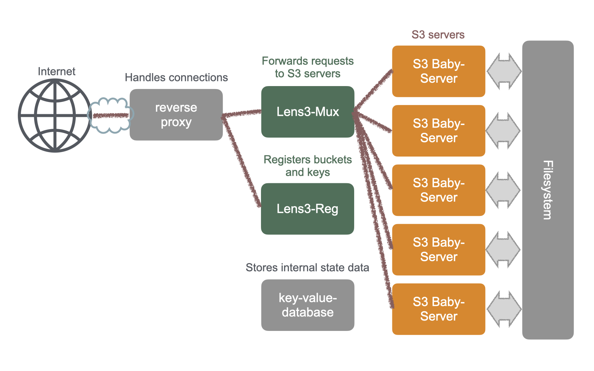

Fugaku AWS S3 Service Guide¶
This AWS S3 service on Fugaku allows users to share files in Fugaku’s filesystem. An S3 server will be started as a user’s process when configured buckets are accessed. Users first need to register the path to a directory in the filesystem to share. Then users can create buckets and access keys.
This user guide briefly describes usage of the S3 service on Fugaku. For questions, asking in Zendesk Community is a quickest way to contact maintainers of the service.
An Overview of the Service¶
This service, Lenticularis-S3 (Lens3), consists of two open-source software, Lens3 + Baby-server. Lens3 is a multiplexer to provide a single access point for multiple servers. Baby-server is a small AWS S3 server. Lens3 forwards access requests to one of the servers with regard to bucket’s owner.

Lens3 does not provide buckets operations, such as listing or creating buckets. Bucket creation is obviously prohibited because Lens3 delivers requests with regard to a bucket (which does not exist yet).
Thus, bucket creation should be performed in advance. The Web-UI is used to create buckets. In Lens3’s terminology, a pool refers to a directory in the filesystem where buckets are created. Users first create a pool, then create buckets in it.
Registering Buckets¶
Lens3 Registrar can be accessed by the following URL. It is a service to register a pool and create buckets and access keys.
https://lens3.fugaku.r-ccs.riken.jp/lens3.sts/
The Lens3’s page in github.com has a good guide of the steps to create buckets. Please refer to it. Bucket names are global, that is, they are shared by all users. Please avoid short commonplace names.
https://github.com/RIKEN-RCCS/lens3/blob/main/v2/doc/user-guide.md
Accessing Buckets by AWS CLI¶
The access point (endpoint_url) of the S3 service is:
There are many AWS S3 client software and choose one for your liking. AWS CLI is a popular one. We use AWS CLI in the following.
AWS CLI Installation¶
An installation instruction of AWS CLI can be found in the following page.
The config file “~/.aws/config” may contain the following lines. The credentials (access keys) can be created and copied in the Web-UI. Usually, only the lines of a pair of credentials are suffice. Note the credentials can be stored in a separate file “~/.aws/credentials”.
[default]
s3 =
signature_version = s3v4
addressing_style = path
ec2_metadata_disabled = true
endpoint_url = https://lens3.fugaku.r-ccs.riken.jp
aws_access_key_id = WoRKvRhrdaMNSlkZcJCB
aws_secret_access_key = DzZv57R8wBIuVZdtAkE1uK1HoebLPMzKM6obA4IDqOhaLIBf
S3 Operation – Listing files¶
Try a simple command:
aws s3 ls s3://some-bucket-name/
Replace some-bucket-name with an actual one, as usual.
Optionally aws command accepts an option
--endpoint-url=https://lens3.fugaku.r-ccs.riken.jp which replaces the
“endpoint_url” in “~/.aws/config”.
S3 Operation – Uploading files¶
Then, try a command:
aws s3 cp sample.txt s3://some-bucket-name/
S3 Operation – Downloading files¶
Or, try another command:
aws s3 cp s3://some-bucket-name/sample.txt
Notes¶
Note
Access keys have expiration. The lifetime of access keys is limited to 180 days in the current setting. It will fail to try to create a key with longer lifetime.
The service is limited to 30 servers at a time (the number of pools simultaneously accessed). It will be upgraded to a more powerful host when the service will become extensively used.
Software Components¶
- Lens3: Multiplexer
- S3 Baby-server: Small AWS S3 Server